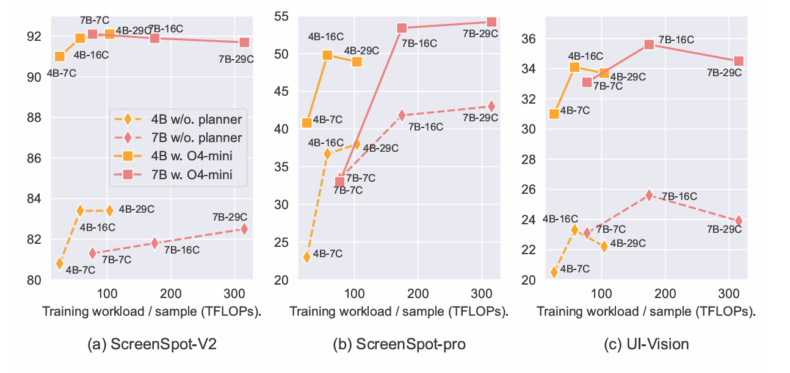

Agent evolution across physical and virtual worlds. Traditional systems rely on fixed controllers and pre-defined workflows to execute domain-specific tasks, either in physical environments (e.g., task-specific robots) or virtual environments (e.g., API-based Web/APP agents). In the modern era, intelligent automation has emerged. In the physical world, general-purpose robots perform versatile limb-based operations. In the virtual world, Computer Use Agents (CUAs) achieve human-level behaviors through general purpose planner, GUI grounding, enabling them to complete any virtual task achievable via mouse and keyboard interactions.
Three levels of task of CUAs. Each coral block represent an action step. CUA can be divided into two steps when completing a task:
temporal planning and grounding.
Planning involves analyzing the task description and the current state to determine the actions that should be taken in the future, w
hile grounding refers to the execution of these specific actions.
In the context of Computer Use scenarios, grounding primarily involves generating computer-interactive commands, which include keyboard,
mouse instructions and etc. Since keyboard commands, such as pressing the "A" key, are discrete, MLLMs can effectively handle this type of grounding.
Our focus is primarily on mouse commands, where the main challenge lies in the fact that mouse command parameters are screen coordinates,
and most MLLMs struggle to accurately identify these coordinates. Therefore, specialized training is required for determining the precise click coordinates.
CommonCrawl data processing pipeline.
Examples of benchmarks used in evaluation. To ensure the model's generalization capability and to avoid systematic overfitting to well-known benchmarks such as ScreenSpot, we have gathered several recent open-source and internally developed evaluation datasets. This approach aims to ensure the comprehensiveness of our testing.
Up: Illustration of the impact of modal input order on model training.
Down: Comparison of input order of modalities.

Illustration of the evaluation results in relation to the training computation load.
The Y-axis represents the benchmark scores in click accuracy, while the X-axis denotes the training computation per sample in TFLOPs.
This training computation is estimated using the formula FLOPs = 6ND, where N is the number of image tokens and D is the number of model parameters.
Types and Proportions of Errors on the ScreenSpot-pro Benchmark. In each image, the red rectangles represent the regions corresponding to the ground truth. Red circles indicate erroneous outputs from the previous stage, while green circles denote correct outputs from the current stage. The centers of the green circles fall within the ground truth boundaries. To avoid obstructing the image content, we have enlarged the green circles in some of the images.